DotNet CLI를 사용하여 .NET Core 앱 생성 및 빌드 그리고
실행
작성자:
레드플러스(박용준)
소개
.NET Core(https://www.microsoft.com/net/core)가 설치되었다면, DotNet CLI(Command Line Interface)인 dotnet
명령어를 통해서 .NET Core 콘솔 또는 웹 응용 프로그램을 만들 수가 있습니다. 이번 따라하기에서는 dotnet 명령어를 통해서 .NET Core 콘솔 응용 프로그램을 만들고 빌드하고 실행하는 내용을 다뤄보도록 하겠습니다.
dotnet의 최소한의 명령어는 아래와 같습니다.
l
dotnet new
l
dotnet restore
l
dotnet run
l
dotnet [app.dll]
따라하기
(1) [Windows + R] 키를 눌러, 명령 프롬프트를 실행합니다. iOS와 리눅스에서는 그에 맞는 콘솔
창을 엽니다.
(2) 명령 프롬프트에서 dotnet 명령어를 실행합니다. 아래 그림과 같이 dotnet CLI 사용법을 보여줍니다.
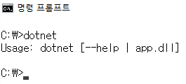
(3) dotnet --help와 dotnet --info 옵션을 사용하여 dotnet 명령어에 대한 주요 정보 및 사용법을 확인합니다.
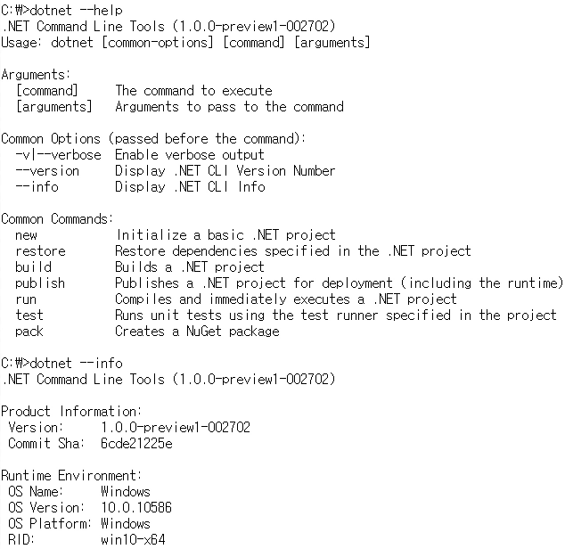
(4) 모든
.NET Core 기반 프로그램은 콘솔 응용프로그램을 시작으로 ASP.NET Core로
확장됩니다. .NET Core 콘솔 응용 프로그램을 만들어 보기 위해서 임시로 DotNetCore란 이름의 폴더를 생성하고 해당 폴더로 이동합니다.
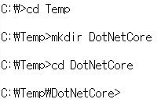
(5) dir 명령어로 DotNetCore 폴더에 아무런 폴더 및 파일이 없는 것을 확인한 후 dotnet new 명령어로 현재 폴더(DotNetCore)를 .NET Core 응용 프로그램 폴더로 생성합니다. dotnet new 명령어를 실행하면 현재 폴더에 Program.cs 파일과 project.json 파일이 생성됩니다. Program.cs 파일은 C#의 엔트리 포인트인 Main 메서드가 존재하는 영역이고 project.json 파일은 현재 프로젝트 및 참조에 대한 정보를 담고 있는 파일입니다.
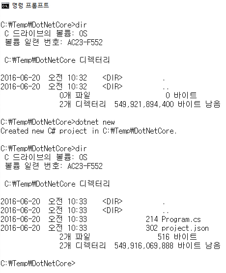
(6) 기본 생성된 파일의 내용을 보기 위해서 Visual Studio Code를 실행합니다. 현재 폴더에서 code . 명령어를 실행합니다.
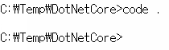
(7) dotnet new 명령어에 의해서 기본 생성된 Program.cs 파일의 내용입니다.
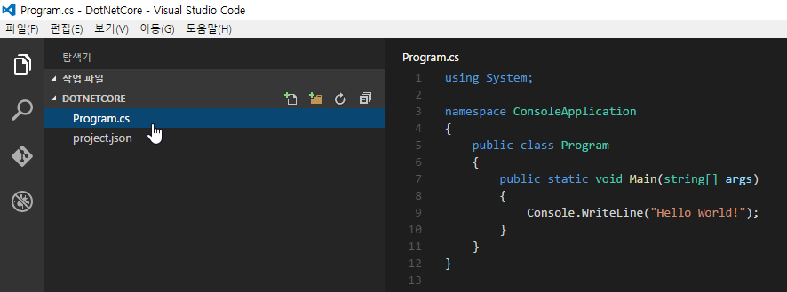
(8) 마찬가지로 project.json 파일의 내용입니다.
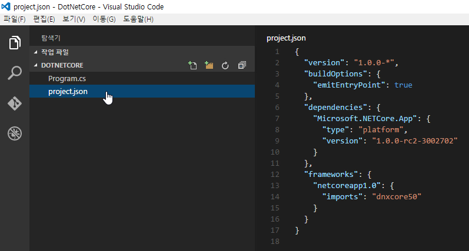
(9) Console.WriteLine() 코드의 내용을
수정합니다.
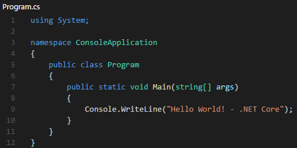
(10) dotnet restore 명령어는
현재 응용 프로그램과 관련된 패키지(어셈블리)들을 다운로드
받아서 사용 가능하도록 해줍니다.
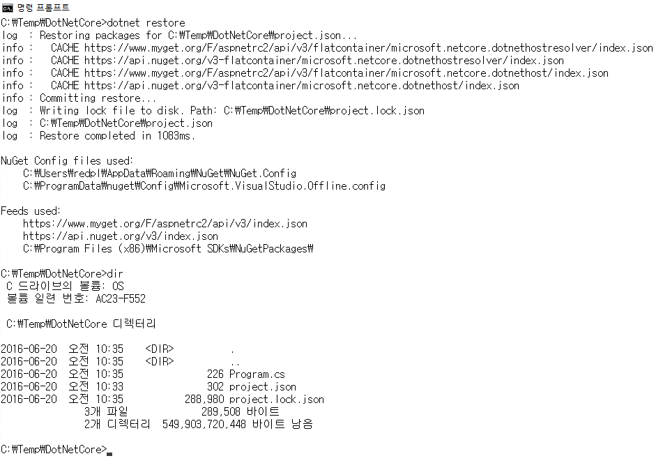
(11) 최종적으로 현재 프로젝트를 실행하려면
dotnet
run 명령어를
실행합니다.
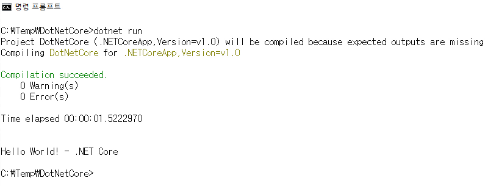
(12) dotnet run 명령어 실행 후 프로젝트 폴더의 내용입니다. bin, obj 등의 폴더가 생성됩니다.
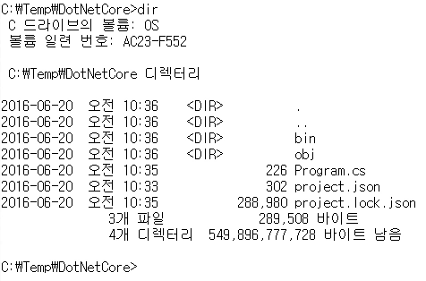
(13) bin/debug/netcoreapp1.0 폴더로 이동하면 프로젝트명.dll 파일이
생성된 것을 확인할 수 있습니다.
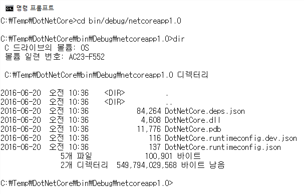
(14) dotnet DotNetCore.dll 명령어를 실행하여 직접 dll 파일로부터 콘솔 앱을 실행할 수 있습니다.
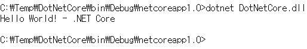
마무리
.NET Core의 크로스 플랫폼 명령줄 도구인 dotnet 명령어를 사용하면 프로젝트를
생성(dotnet new), 참조 가져오기(dotnet
restore), 프로젝트 실행(dotnet run)의 기능을 사용할 수 있습니다. 이는 ASP.NET Core에서도 그대로 사용하는 명령어입니다.